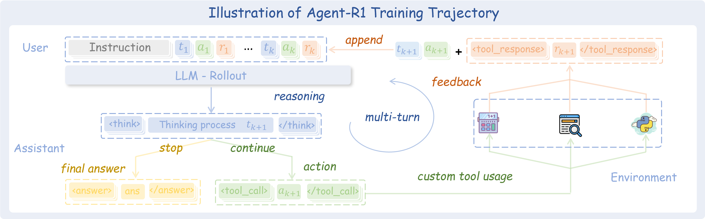

将 MDP 框架系统性延伸至多轮工具调用场景，
构建模块化、易扩展的 Agent 强化学习训练框架。
中国科学技术大学 · 认知智能全国重点实验室
大语言模型（LLM）越来越多地被用于构建能与环境主动交互的 Agent——通过工具调用、多步推理解决复杂问题。 强化学习（RL）被认为是训练此类 Agent 的关键技术，但其有效应用仍处于早期阶段， 面临多轮交互不稳定、奖励信号设计复杂、泛化能力受限等独特挑战。
Agent-R1 从概念与实践两个维度系统性地回应了这些挑战： 一方面，对 RL 方法论在 LLM Agent 场景下的应用进行梳理与澄清； 另一方面，提供一个灵活、易用的端到端训练框架，开发者只需定义工具和奖励函数即可快速迁移到新场景。
将 RL 应用于 LLM Agent 训练时，Agent 场景的独特性带来了与静态任务截然不同的挑战：
Agent 需要在多轮交互中保持记忆、做出连贯决策，而非单次生成文本。
工具调用的返回结果具有不确定性，状态转移不再是确定性的，训练更难收敛。
任务结果奖励只在最终步给出，难以为中间工具调用提供有效的学习信号。
现有 RLVR 框架多面向静态任务，缺乏对多轮工具交互、过程奖励的系统支持。
Agent-R1 将标准 MDP 框架系统性延伸到 LLM Agent 场景， 明确刻画了多轮交互、工具调用、过程奖励等核心差异：
| MDP 组件 | 静态 LLM | LLM Agent（Agent-R1） |
|---|---|---|
| 状态空间 S | 当前文本序列（prompt + 已生成 tokens） | 完整多轮交互历史，包含每轮的 Agent 输出与环境反馈 |
| 动作空间 A | 从词表中选择下一个 token | token 生成，特定序列可触发外部工具调用 |
| 状态转移 P | 确定性：拼接 token 即得下一状态 | 混合：文本生成确定，工具调用引入随机环境反馈 |
| 奖励函数 R | 稀疏：仅在生成结束时给出结果奖励 | 密集：结果奖励 + 中间步骤过程奖励（工具调用有效性） |
这一框架扩展是 Agent-R1 的理论基础——只有精确建模 Agent 与环境的交互机制， 才能设计出真正适配多轮工具调用场景的 RL 训练方法。
在 Agent 场景中，除任务最终结果奖励 r_f 外，
Agent-R1 还为每次工具调用分配过程奖励 r_p，
对成功执行中间步骤给予即时正向反馈，大幅缓解奖励稀疏问题。
在终止状态给出，衡量最终任务完成质量，如答案的 Exact Match 得分。
在每次有效工具调用后给出，衡量中间步骤的执行效果，提供更密集的学习信号。
Agent-R1 将传统单轮 RL 训练框架扩展为支持多轮交互 Rollout 的完整系统，
核心由 Tool 与 ToolEnv 两个模块构成。

精确区分 Agent 生成内容与环境反馈，确保策略梯度损失只计算在 Agent 实际决策的 token 上，避免向 prompt 或环境输出反向传播错误梯度。
优势值计算同时融合过程奖励与结果奖励，并与 Action Mask 对齐，确保每一步的信用分配精确对应 Agent 的实际决策行为。
框架原生支持 PPO、GRPO、REINFORCE++、REINFORCE++Baseline 和 RLOO，可灵活切换评估不同 RL 算法在 Agent 场景下的表现。
与视觉语言模型（VLM）无缝集成，支持同时处理文本与视觉输入的多模态 Agent 训练场景。
在多跳问答（Multi-hop QA）任务上进行验证，Agent 使用 wikisearch 工具查询维基百科（~3600 万段落）来回答需要多步推理的问题。
| 方法 | HotpotQA† | 2WikiMultihopQA† | Musique* | 平均 |
|---|---|---|---|---|
| Base Tool Call | 0.1372 | 0.0891 | 0.0277 | 0.0847 |
| Naive RAG | 0.1916 | 0.1792 | 0.0277 | 0.1328 |
| PPO | 0.4136 | 0.5468 | 0.1552 | 0.3719 |
| GRPO 最优 | 0.4405 | 0.5741 | 0.1485 | 0.3877 |
| REINFORCE++ | 0.3768 | 0.4796 | 0.1336 | 0.3300 |
| REINFORCE++Baseline | 0.3966 | 0.5406 | 0.1485 | 0.3619 |
| RLOO | 0.4089 | 0.5641 | 0.1419 | 0.3716 |
† 域内数据集；* 域外数据集
所有 RL 训练方法均大幅超越基线：最弱的 RL 算法（REINFORCE++，平均 EM 0.33） 仍比 Naive RAG（0.13）高出约 2.5 倍。GRPO 综合表现最优， PPO 在域外 Musique 数据集上表现突出，展现了良好的泛化能力。
消融实验证明 Action Mask（用于损失计算与优势对齐） 是 Agent-R1 框架中最关键的设计之一。 去掉 loss mask 或 advantage mask 均会导致性能显著下降， 说明精确的信用分配对多轮 Agent 训练至关重要。
如果本项目对您的研究有所帮助，请考虑引用：
感谢 DeepSeek-R1 提供的模型与启发性思路；感谢 veRL 团队提供的强大训练基础设施；感谢 RAGEN 团队的开创性探索对本项目早期方向的深刻影响。